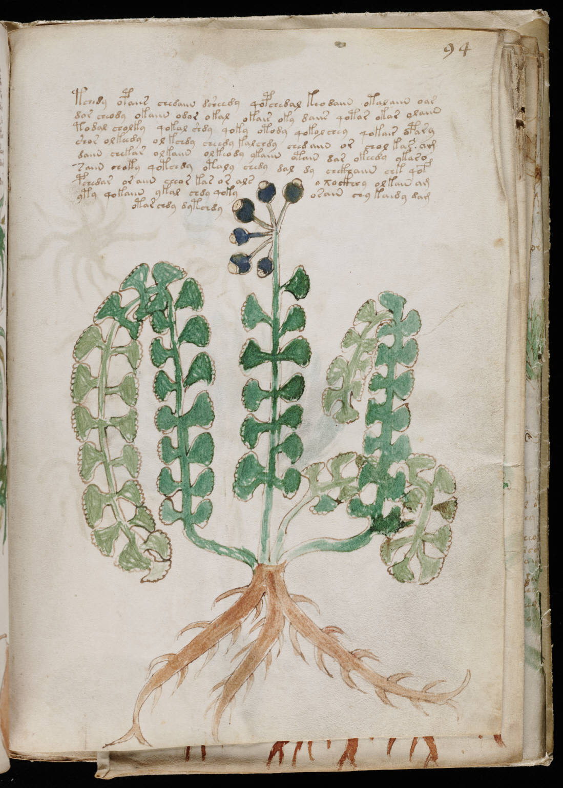

f94r
1tchedy opaiis chedaiin dsheedy qopchedal keo daiin otalaiin oar2dor cheody okaiin odor okal okair oky daiis qotar okar olaiin3todal cholky qokal shdy qoky otody qokol chey qokair opary4shor olkeedy olkchdy cheedy kalchdy ched aiin or chol kar am5daiin chekar olkaiin olkeody ykaiin otain dar okeedy ykaro6saiin choky qotchdy otaly chedy dal dy chckhaiin chk qof7pchedar or aiin cheor kas or alsoxockhey olkain am8yty qokaiin ykal chdy qokyosain chy kaedy dam9otar chdy dytchdy
